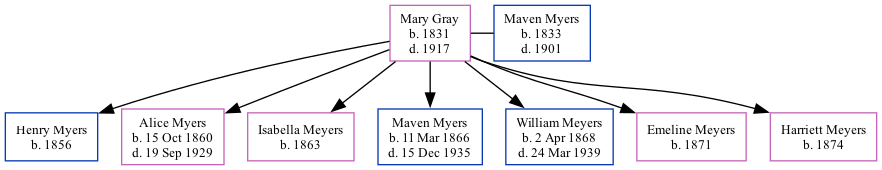

Mary Myers (née Gray) 1831 - 1917
[ Home ] | [ Calendar ] | [ Surnames Index ] | [ Family History ]Mary Gray was born in England in 18311,2 and married Maven Myers (a coal miner with whom she had 7 children: Henry, Alice Gray, Isabella, Maven, William, Emeline and Harriett A) at All Saints, Wigan, Lancashire, England on Aug 6, 18553.
Throughout her life, she lived in Lackawanna, Pennsylvania, USA on Jun 1, 18802 and on Jun 1, 19004.
She died in 1917.
Children
- Henry was born in 1856
- Alice Gray was born on Oct 15, 1860
- Isabella was born in 1863
- Maven was born on Mar 11, 1866
- William was born on Apr 2, 1868
- Emeline was born in 1871
- Harriett A was born in 1874
Citations
- England Marriages 1538-1973 - Findmypast
- Us Census 1880 - Findmypast (was age 49 and the wife of the head of the household)
- England & Wales Marriages 1837-2005 - Findmypast
- US Census 1900 - Findmypast (was the wife of the head of the household)
Family Tree

Map
Generated by ged2site. Last updated on Feb 28, 2025